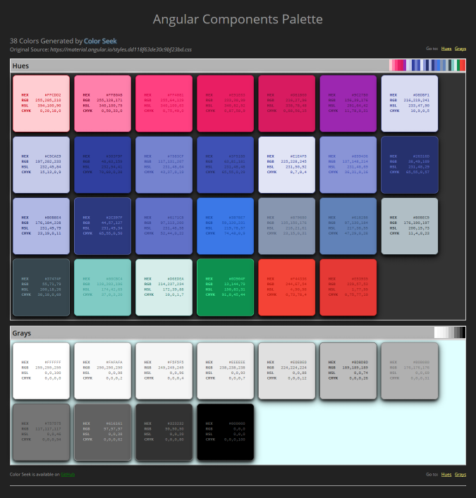
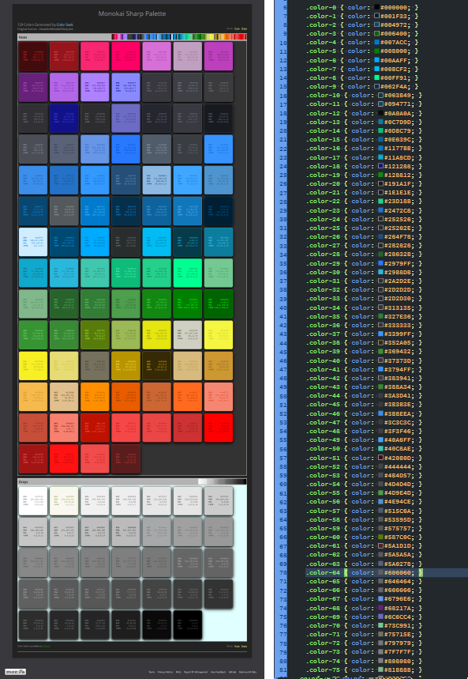

Color Seek
Version 0.1 | Full Documentation (API).
Overview
Color Seek allows you to build a color palette from a source file or URL. The source is scanned for valid
CSS color values and the results are formatted, purged of duplicates, and then sorted to produce the
Color Palette. The palette can then be transformed into several predefined file formats for use in your projects.
In addition, a HTML page is created which displays the palette as a grid of swatches, with the colors displaying
their value in each CSS format.

CSS Color Formats
CSS currently accepts three formats for color specification.
| Format | Example | Description |
|---|---|---|
| Hex | #1188FF |
Hexadecimals of Red (11), Green (88), Blue (FF) |
| RGB | rgb(32, 128, 255) |
Range for Red (0-255), Green (0-255), Blue (0-255) |
| HSL | hsl(359, 25%, 100%) |
Range for Hue (0-359), Saturation (0-100%), Lightness (0-100%) |
Possible CSS4 Color Formats
Proposals exist for additional color formats in CSS4. One, CMYK, is well known outside of CSS and has been in use
for many years in printing and graphic design. Therefore, we've decided to add it as a bit of future-proofing.
| Format | Example | Description |
|---|---|---|
| CMYK | cmyk(100, 25, 50, 75) |
Range of Cyan, Magenta, Yellow, Black (0-100) |
Named Colors
Another naming convention for color values is a named color. There are currently 140 color names available ranging
from black to white. Color Seek looks for named colors and converts them to hexadecimal.
Output File Types
A color palette can be rendered into several formats simultaneously. Along with CSS, SASS and LESS are available
as output options. You may also choose the Gimp Color Palette format as well. An HTML file is always generated
automatically regardless of what other options as selected.
File Formats
Each of the formats below can be generated when creating a palette.
| File Type | Description |
|---|---|
| CSS | Cascading Style Sheet |
| GPL | Gimp Color Palette |
| LESS | Less Style Sheet |
| SCSS | Sass Style Sheet |
Using Color Seek
Command Line
All interaction with Color Seek is through the Command Line Interface (CLI). All valid commands and switches are available via the help display.
Help
'colorseek -h' or 'colorseek --help' displays the available commands:
| Command | Description |
|---|---|
| -i, --input [PATH] | *The source file or url to search for color values |
| -o, --output [DIRECTORY] | The file(s) output directory |
| -n, --name | The output file(s) name (do not add extension) |
| --css | Create a CSS rendering of the color palette |
| --gpl | Create a Gimp Palette rendering of the color palette |
| --less | Create a LESS rendering of the color palette |
| --sass | Create a SASS rendering of the color palette |
*Required
When no output directory is specified the current directory will to used. If no output name is specified the input file
name will be used.
All file types can be rendered by adding the corresponding command switch. If no output type is given only the HTML
file will be generated.
Examples
The following examples demonstrate various options available with Color Seek. As HTML files are always generated
they will only be demonstrated in the first example.
Create a CSS file from a Local File
$ colorseek -i /c/docs/MonokaiSharp.json -n Monokai-Sharp --cssColor Seek creates a HTML file and a CSS file named Monkikai-Sharp.html and Monokai-Sharp.css in the
Color Seek directory.
(NOTE: The file used as input is a Visual Studio Code color theme exported
to a JSON file.)

Create a SASS file with RGB Colors from a URL
$ colorseek -i https://material.io/static/m2/css/main.min.css -n "Material Theme" --sass --rgbExtracting colors from a stylesheet url is as simple as a local file. The --sass switch tells Color Seek to use the
.scss (SASS) file extension. Instead of hex values we instead choose the RGB color format by providing the --rgb
switch. Notice the use of double quotes around the name value. This is needed if you want a space in any value.